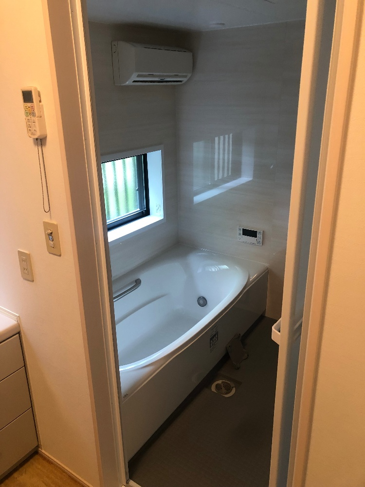
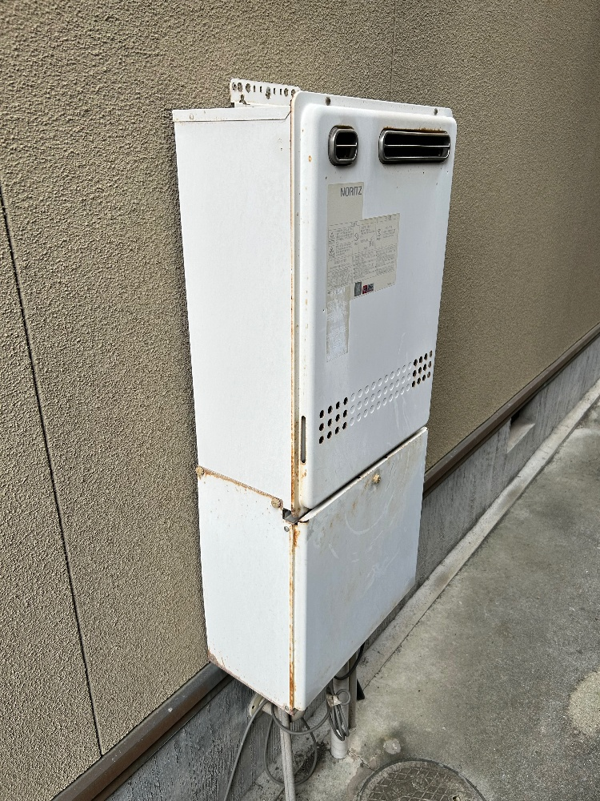
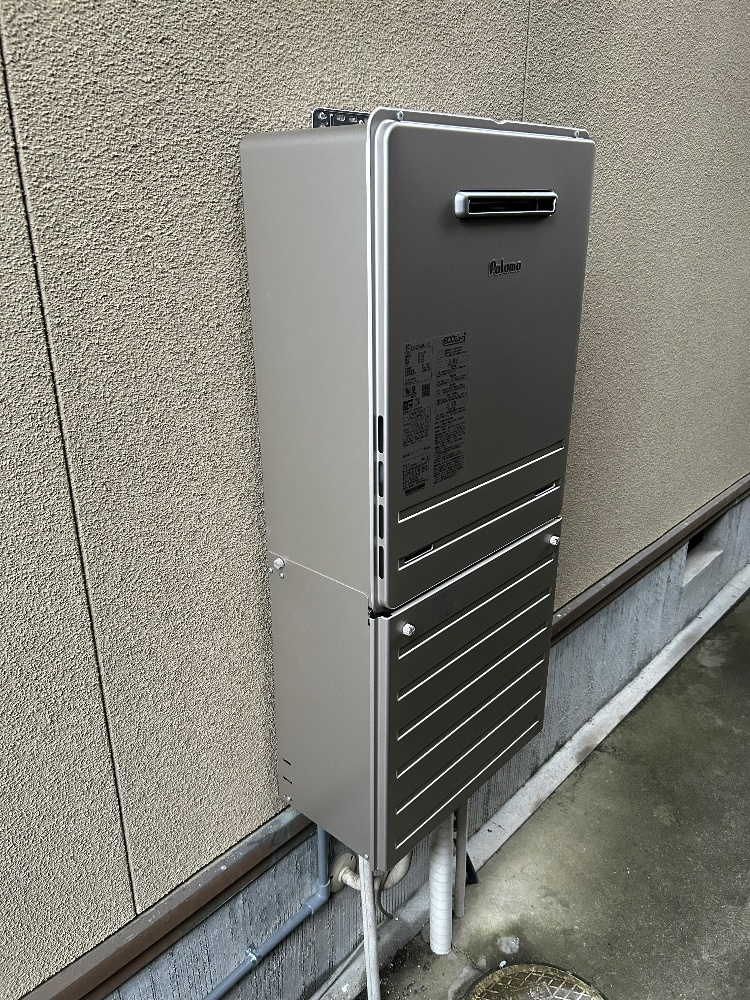
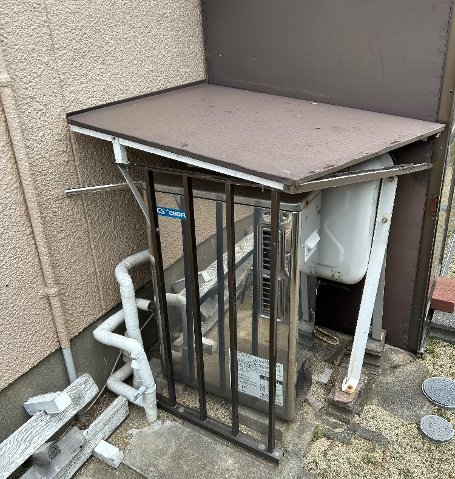
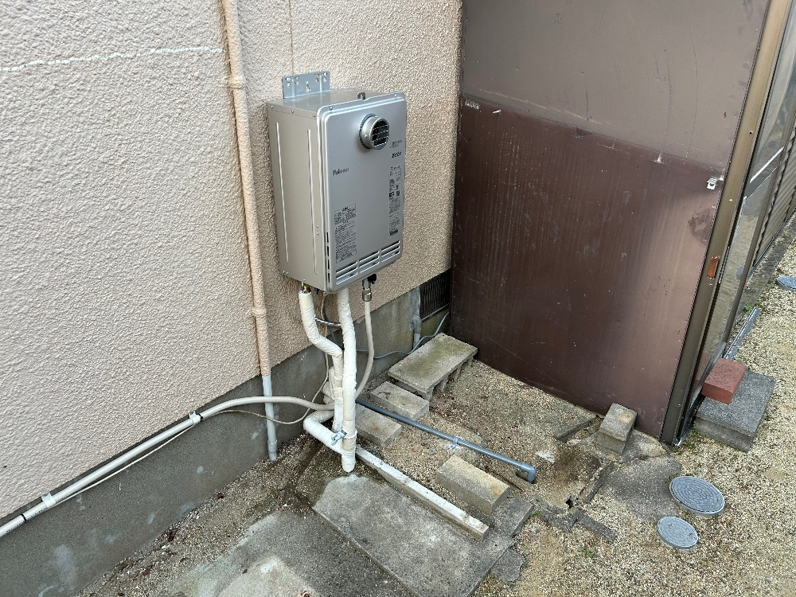
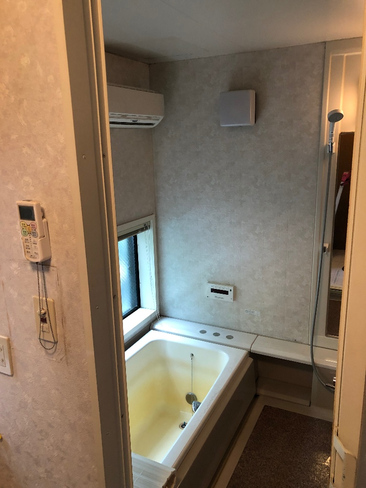

LPガスの販売・供給
毎日の調理やお湯に欠かせないLPガス。販売から供給管理、ガス配管工事まで対応します。
料金表を見る大阪・岬町 / 泉南地域
ガスのことも、お湯のことも、水回りのことも。
地域の暮らしを、ウエムラが支えます。

OUR SERVICES
LPガスの供給から住宅設備のお困りごとまで。
施工前後の丁寧な説明を大切に、
お客様に合った商品・工事をご提案します。
毎日の調理やお湯に欠かせないLPガス。販売から供給管理、ガス配管工事まで対応します。
料金表を見るガス機器の販売・取替え・関連工事を承ります。設置後のアフターフォローもご相談ください。
施工事例を見る浴室など、毎日使う水回りをより快適に。お住まいに合わせたリフォームをご提案します。
リフォームを相談するOUR WORKS
施工前と施工後を、写真でご紹介します。





写真を選ぶと、大きな画像を別のタブでご覧いただけます。
| 基本料金 | 2,200 円 |
|---|---|
| 従量料金1m³あたり | 715 円 |
6,490 円／月
参考サイト掲載の料金です（2026年9月26日確認）。ご契約に適用される料金は、お電話でお問い合わせください。
ABOUT UEMURA
昭和21年、調味料燃料店として創業。
地域に根ざした迅速な対応と丁寧な説明で、
長く安心してお付き合いいただける
会社を目指しています。
泉南地域を中心とした近隣エリア
CONTACT
ガス・給湯器・水回りのご相談を承ります。